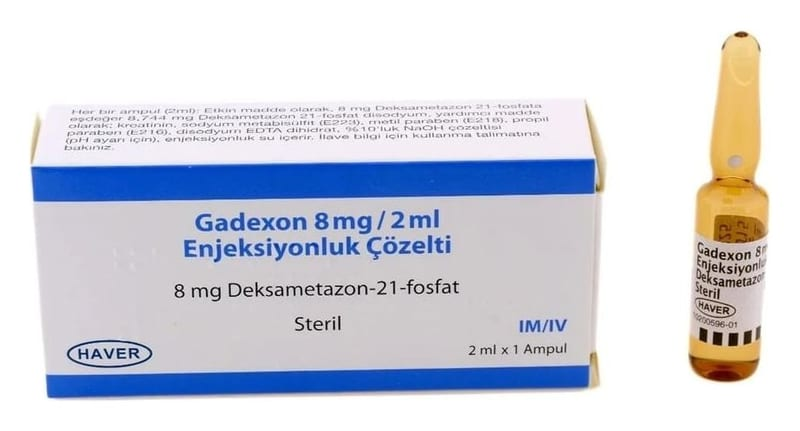

Gadexon 8 mg/2 ml Enjeksiyonluk Çözelti, 100 Adet

Ne için kullanılır
KT · Bölüm 1GADEXON, kortikosteroid (hormonlara benzeyen ilaçlar) grubuna dahil bir ilaç olan deksametazon içeren ampuldür. GADEXON, kas içine/damar içine uygulanan renksiz bir çözelti olup, kortikosteroid olarak adlandırılan ilaç grubuna aittir. Etkin madde olarak 2 mL’de 8 mg deksametazon-21-fosfat içerir ve 1 ve 100 ampullük ambalajlar halinde kullanıma sunulmuştur. GADEXON, deksametazon etkin maddesini içermektedir. Bu ilacı kullanmaya başlamadan önce bu KULLANMA TALİMATINI dikkatlice okuyunuz, çünkü sizin için önemli bilgiler içermektedir. • Bu kullanma talimatını saklayınız. Daha sonra tekrar okumaya ihtiyaç duyabilirsiniz. • Eğer ilave sorularınız olursa lütfen doktorunuza veya eczacınıza danışınız. • Bu ilaç kişisel olarak size reçete edilmiştir, başkalarına vermeyiniz. • Bu ilacın kullanımı sırasında, doktora veya hastaneye gittiğinizde doktorunuza bu ilacı kullandığınızı söyleyiniz. • Bu talimatta yazılanlara aynen uyunuz. İlaç hakkında size önerilen dozun dışında yüksek veya düşük doz kullanmayınız.
GADEXON, vücutta iltihap ile ilgili çeşitli hastalıkların tedavisinde etkilidir.
Deksametazon alerjik bozukluklar, endokrin hastalıklar (hormonlarla ilgili hastalıklar), deri hastalıkları, romatizmal hastalıklar, göz ile ilgili (oftalmik) hastalıklar, kan hastalıkları, ödeme yol açan hastalıklar, sindirim sistemi hastalıkları, iltihabi bağ dokusu hastalıkları, sinir sistemi hastalıkları veya solunum bozuklukları gibi hastalıkların tedavisinde kullanılır.